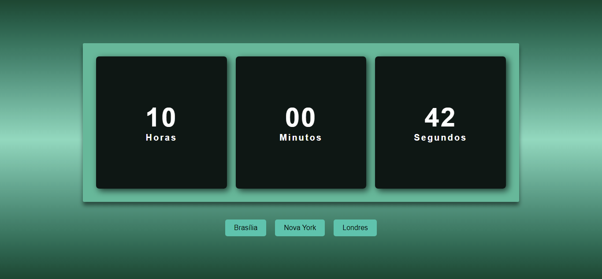
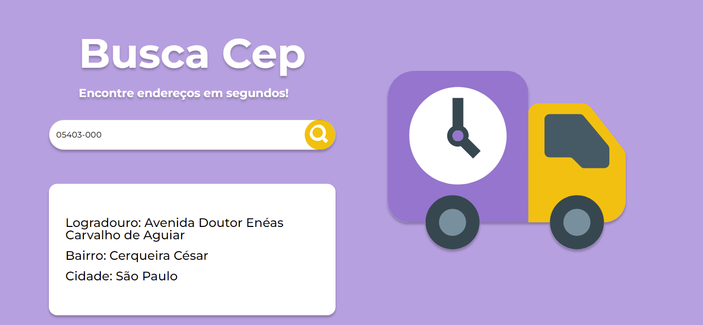
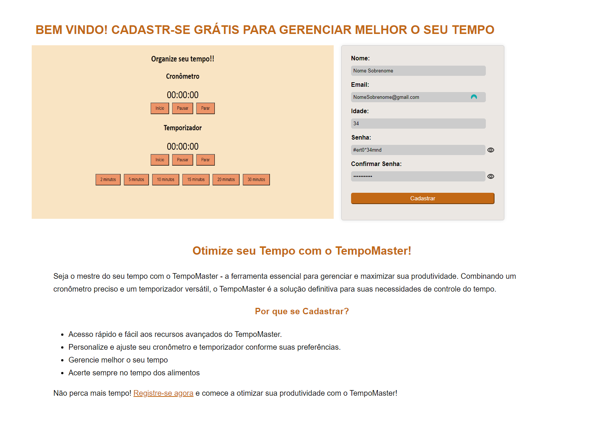
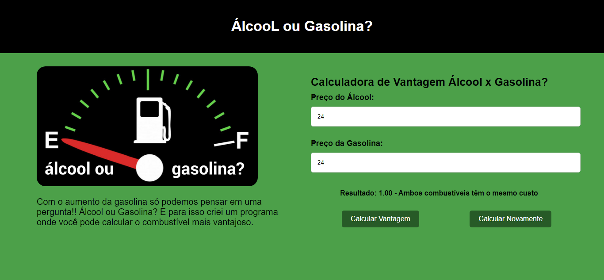

MUITO PRAZER, SOU ADRIANA MACHADO.
Sou uma pessoa que gosta de atividades divertidas e desafiadoras, gosto de praticar esportes como andar de bicicleta, pilates e algumas vezes Jiu-jitsu, sou proativa e gosto de ajudar o próximo, não posso dizer que sou introvertida ou extrovertida, mas sim uma pessoa que lida bem com a adaptação.
Sobre o ambiente de trabalho, gosto de estar em um ambiente amigável, onde exista respeito e diversidade, trabalhos em equipe e orientação quando necessário é um ponto bastante importante para mim, empresas que buscam ajudar a comunidade e disseminar o conhecimento são o nosso futuro.
Minhas HABILIDADES!
HTML
Hypertext Markup Language: É a linguagem utilizada para criar a estrutura e o conteúdo das páginas da web, usando tags para definir elementos como texto, imagens e links.
CSS
Cascading Style Sheets: É a linguagem usadas para estilizar e formatar elementos HTML em uma página da web, permitindo definir cores, fontes e layout para tornar as páginas visualmente atraentes.
JS
JavaScript: É uma linguagem de programação usada para tornar as páginas da web interativas e dinâmicas, permitindo adicionar funcionalidades como validação de formulários, animações e interação com o usuário.
GitHub
GitHub é uma plataforma online que permite aos desenvolvedores hospedar e compartilhar códigos-fonte, colaborar com outros desenvolvedores, revisar e gerenciar mudanças no código, e controlar versões de projetos de software usando o Git, um sistema de controle de versão distribuído.
Meus Projetos!
Todo List
O projeto Todo List ajuda na gestão de tarefas pessoais, oferecendo uma interface interativa
e responsiva.
Utilizamos React, hooks como useState e useEffect, axios para requisições HTTP e SweetAlert2
para modais e alertas. As principais funcionalidades incluem adicionar, remover e marcar
tarefas, busca por texto, filtragem por categoria e ordenação alfabética. As tarefas são
salvas no localStorage para persistência dos dados.
A interface é responsiva e fornece feedback visual com SweetAlert2 durante as interações.
Relógio Digital Dinâmico
Este projeto é um relógio digital desenvolvido com HTML, CSS e JavaScript, exibindo horas, minutos e segundos em tempo real. Ele demonstra fundamentos de desenvolvimento web e manipulação dinâmica de elementos.
O arquivo HTML define a estrutura do relógio, estilizada pelo CSS para uma apresentação visual atraente. O JavaScript atualiza dinamicamente o conteúdo do relógio com a hora atual do sistema, assegurando precisão e funcionalidade contínua.
Utilizando npm e Moment.js, o projeto integra funcionalidades avançadas de fusos horários, permitindo exibir a hora em diversas regiões do mundo. Este projeto não só introduz o básico do desenvolvimento web, mas também oferece uma base flexível para expansões e personalizações futuras.
Busca Cep
O aplicativo desenvolvido em React permite aos usuários realizar buscas de endereços utilizando o CEP (Código de Endereçamento Postal). Os usuários inserem o CEP na caixa de entrada e iniciam a busca clicando no ícone correspondente.
O aplicativo faz uma requisição HTTP à API pública do ViaCEP (https://viacep.com.br/) para obter informações detalhadas do endereço associado ao CEP digitado. Após a busca, se o CEP for encontrado, são exibidos o logradouro (rua), bairro e cidade na interface. Caso o CEP não seja encontrado ou ocorra algum erro na busca, uma mensagem indicando isso é exibida para o usuário.
Para garantir a integridade dos dados exibidos, o aplicativo valida os campos necessários do endereço antes de mostrar os resultados. Além disso, utiliza o SweetAlert2 para feedback visual através de alertas em situações de erro, como quando o usuário não insere um CEP válido. O layout responsivo do aplicativo, utilizando componentes Grid do Material-UI, assegura uma boa experiência de usuário em diferentes dispositivos e tamanhos de tela.
Cronômetro e Temporizador
O cronômetro é uma aplicação que permite aos usuários medir o tempo decorrido com precisão.
Utilizando elementos como a tag no HTML, ele exibe as horas, minutos e segundos, enquanto os
botões "Iniciar", "Pausar" e "Parar" oferecem controle total sobre a contagem do tempo.
Por outro lado, o temporizador é uma ferramenta útil para definir intervalos de tempo
específicos. Com botões predefinidos para 2, 5, 10, 15, 20 e 30 minutos, os usuários podem
configurar facilmente o temporizador para atender às suas necessidades. Uma vez iniciado, o
temporizador conta regressivamente até zero, emitindo um alerta quando o tempo definido é
atingido.
Formulário de Cadastro
O Formulário de Cadastro é essencial no projeto Cronômetro e Temporizador, permitindo que usuários se registrem para acessar recursos avançados. Desenvolvido com HTML, CSS e JavaScript, oferece uma experiência intuitiva.
O formulário inclui campos para nome completo, email válido, idade (para verificar maioridade), senha segura e confirmação de senha. Ele valida os dados inseridos para garantir que estejam completos e corretos, alertando sobre campos obrigatórios e requisitos específicos, como formatos de senha.
Após preencher corretamente todos os campos, os usuários são automaticamente redirecionados à página principal da aplicação. Esta funcionalidade garante uma experiência fluida e direta para os usuários ao se registrarem no sistema.
Álcool ou Gasolina
O projeto Álcool ou Gasolina utiliza HTML, CSS e JavaScript para criar uma aplicação que ajuda os usuários a decidirem qual combustível é mais vantajoso financeiramente. Os usuários inserem os preços do álcool e da gasolina, e o JavaScript realiza cálculos para determinar e exibir dinamicamente qual opção oferece a melhor economia, junto com a diferença percentual entre os preços.
HTML é usado para estruturar a página, CSS para estilização visual e JavaScript para funcionalidades interativas, como captura de dados, cálculos e exibição de resultados. A aplicação exemplifica a aplicação prática dos conceitos aprendidos no curso superior em Tecnologia em Sistema para Internet, proporcionando uma ferramenta útil e acessível para os usuários.
Spotify Clone
Este projeto foi criado durante a Imersão Front-end da Alura, com a participação dos
professores da Alura.
O projeto consiste em um clone simplificado da interface do Spotify, desenvolvido utilizando
HTML, CSS, JavaScript,
e integração com o JSON-Server para simular uma API fake e verificar o comportamento do
campo de input do projeto.
Durante o desenvolvimento, utilizamos variáveis CSS para melhor organização e manutenção do
estilo.
Jogo Mario
O jogo foi criado com HTML para estruturação, CSS para estilização e JavaScript para as
animações, incluindo a movimentação do cenário,
como as nuvens, e a movimentação do personagem principal, o Mario.
O desenvolvimento envolveu a integração de interações precisas, como os momentos certo para
pular os canos.

Game Pokémon
O Game Pokemom foi desenvolvido utilizando as linguagens HTML, CSS e JavaScript. O principal
objetivo do jogo é guiar o personagem Ash pela tela, usando as teclas direcionais do
teclado, em
busca dos Pokémon escondidos no campo.
O jogador tem um tempo determinado para encontrar todos os Pokémon,
além disso o jogo com recursos de áudio, os quais podem ser ativados ou desativados

Calculadora IMC
A Calculadora IMC mede o índice de massa corporal do usúario, o IMC é calculado dividindo o peso (em quilogramas) pela altura ao quadrado (em metros). O usuário deve preencher os campo corretamente e comparar o valor recebido com a tabela fornecida no projeto.